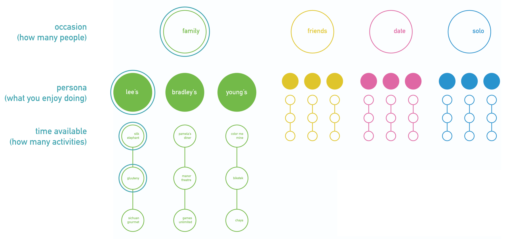
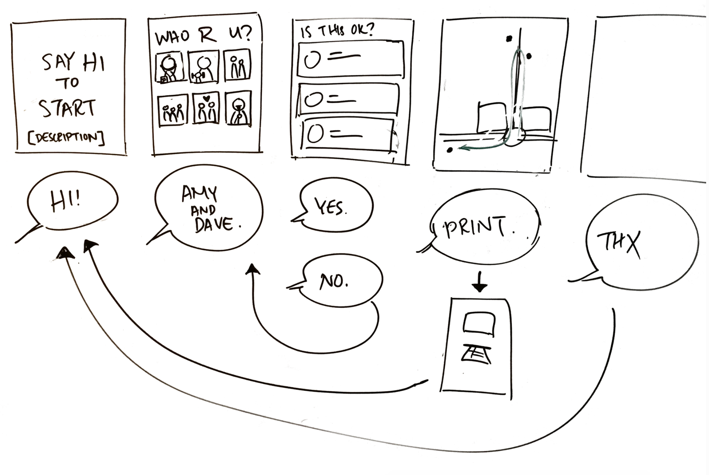

Wayfinding
Challenge
Create a wayfinding device that uses speech recognition as the sole form of input.
Outcome
A kiosk that recommends day trip itineraries in Squirrel Hill based on a visitor's party size, interests and amount of available time to encourage exploration of the neighborhood.
Role
- UX Designer
- Illustrator
Collaborators
- Alex Tsai
- Sharon Yu
Walkthrough


Background
Squirrel Hill is a residential neighborhood in Pittsburgh, PA that offers a diverse range of experiences for entertainment, food, and shopping. College students and locals typically frequent the same tried-and-true stops, so we wanted to create a wayfinding experience that brought attention to the lesser known "hidden gems" of the area.
Process
Information Structure
To compile a list of destinations to recommend, we perused Yelp for suggestions. Based on the kinds of activities we found, we constructed personas which we loosely defined as people who enjoy trying new food, thrills and new experiences, and quiet activities.
We then wanted to identify what type of trip it was: a solo adventure, a hangout with friends, a date, or a family trip. We generated up to 3 stops for each occassion and activity preference.
Finally, based on the amount of time the visitor wanted to spend in the neighborhood, we provided one, two, or all of the stops in the final itinerary.
Wireframes
Storyboards and journey maps helped us feel out the flow of the questions. We designed them intentionally to only prompt for one-word answers, to minimize chances for detection error.
We also wanted our device to be accessible on-site for public use. A kiosk fit this description well.

Content & Assets
I explored ways to incorporate visual feedback into the interface, such as voice waves when sound is picked up and playful animations when an answer is registered.
Below are persona illustrations and animations I created, used as assets in our interface.


Learning Outcomes
- Navigating the affordances and limitations of a speech recognition interface
- Creating an intentional structure in information design
- Some coding with p5.js
Reflection
The speech-based interface was a constraint that pushed me to think about interactions more particular to a voice UI. For example, we realized that the chance of input error with voice was higher than with touch, so we designed for short answers. When writing questions, we needed to identify what we were asking at each step.